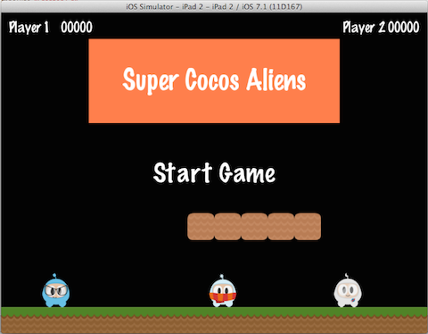

基本概念
本章假设您刚刚开始使用 Cocos2d-x，准备开始你的游戏开发之旅。不要因为自己是新手而担心，整个学习过程会很有趣。
让我们开始！
游戏引擎是一种特殊的软件，它提供游戏开发时需要的常见功能；引擎会提供许多组件，使用这些组件能缩短开发时间，让游戏开发变得更简单；专业引擎通常会能比自制引擎表现出更好的性能。游戏引擎通常会包含渲染器，2D/3D 图形元素，碰撞检测，物理引擎，声音，控制器支持，动画等部分。
Cocos2d-x 就是这样的一个游戏引擎，它提供了许多易于使用的组件，有着更好的性能，还同时支持移动端和桌面端。Cocos2d-x 通过封装底层图形接口提供了易用的API，降低了游戏开发的门槛，让使用者可以专注于开发游戏，而不用关注底层的技术细节。更重要的是 Cocos2d-x 是一个完全开源的游戏引擎，这就允许您在游戏开发过程中根据实际需要，定制化引擎的功能，如果您想要一个功能但又不知如何修改，提出这个需求，全世界的开发者可以一起为您完成。
只使用 Cocos2d-x 引擎，你就能完成一款游戏的开发，因为 Cocos2d-x 提供了游戏开发所需的一切。
组件简介
精通 Cocos2d-x 很难，但是上手 Cocos2d-x 很容易，让我们从一些基本概念开始。
下面是一个简单的游戏界面:

让我们再来看一下，分解这个游戏界面的组件构成。

能看到一个菜单(Menu)，几个精灵(Sprite)，和几个标签(Label)，观察一下喜欢的游戏，会发现这些组件以某种形式存在其中。